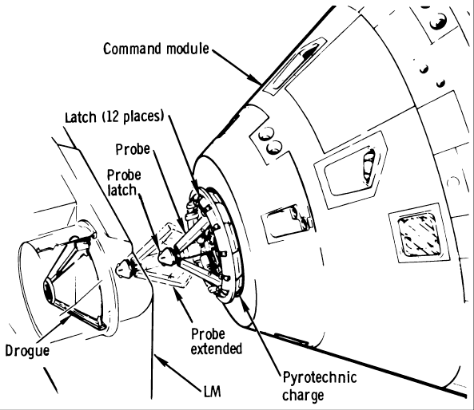

Apollo 14
Day 1: Transposition, Docking and Extraction
Corrected Transcript and Commentary Copyright © 2005 by W. David Woods, Ronald Hansen, and Ben Feist. All rights reserved.
Last updated 2016-02-11
002:38:57 Fullerton: Apollo 14, Houston through Guam. Over.
002:38:58 Shepard (onboard): They're not mine.
002:39:00 Mitchell: Go ahead, Houston. Say again.
002:39:02 Fullerton: You're loud and clear, Ed. And we should have continuous voice and data from here on out. You're loud and clear through Guam.
002:39:12 Mitchell: Okay, Gordon. We have your - have good signal strength for you now. And I might say the earth is starting to drop away very rapidly at this point.
002:39:21 Fullerton: Roger.
002:39:25 Mitchell: And Stu and Al have started to change seats. We're going into our ...
002:39:28 Fullerton: Roger.
002:39:30 Mitchell: ... pre-Sep checklist. [Long pause]
002:40:25 Fullerton: Apollo 14, Houston. I have an update to your highgain gimbal angles as shown on page 3-3 when you're ready.
002:40:38 Mitchell: Okay. Go ahead.
002:40:40 Fullerton: Okay, about five lines from the bottom, this is the high-gain angles after pitch around for docking. It should be a pitch, plus 11; and yaw, plus 306. [Long pause]
002:40:59 Mitchell: Understand. Pitch, plus 11; and yaw, plus 3 - plus 306.
002:41:06 Fullerton: Roger. That's right.
This is Apollo Control, Houston at 2 hours, 43 minutes into the flight of Apollo 14. The booster has advised the Flight Director that the maneuver to separation attitude should begin at 2 hours ... minutes into the flight of Apollo 14. The booster has advised our flight director that the maneuver to separation attitude should begin at 2 hours, 49 minutes, 23 seconds. About 3 minutes, the time duration for the maneuver separation, we're now looking at 2 hours, 59 minutes, 23 seconds. We'll stand by and continue to monitor. This is Apollo control Houston.
002:44:00 Fullerton: Apollo 14, Houston. I have some updates for your - for you now. Over.
002:44:06 Mitchell: What type of updates?
002:44:08 Fullerton: I've got the
S-IVB maneuver time and Sep time that goes on 3-1, and then a new
S-IVB viewing attitude.
002:44:17 Mitchell: Roger. I'm ready to copy.
002:44:23 Fullerton: The
S-IVB maneuver time, 2:49:23. Maneuver will be complete in 3 minutes, and the nominal Sep time is 2:59:23. [Long pause]
002:44:44 Mitchell: Understand
S-IVB maneuver 2:49:23 and it'll maneuver for 3 minutes. Sep is 2:59:25 - 23.
002:44:53 Fullerton: That's correct, Ed. And then on page 3-7 - stand by 1. [Long pause]
002:45:08 Fullerton: 14, Houston.
002:45:12 Mitchell: Go ahead.
002:45:13 Fullerton: Terminate the cabin repressurization. We show you over 6 psi.
002:45:17 Mitchell: We beat you to it.
002:45:20 Fullerton: Okay. And we have 3 7 in front of you. I'll give you the new
S-IVB view-attitude Noun 22 angle.
002:45:33 Mitchell: Okay, go ahead.
002:45:34 Fullerton: Okay, it's about a quarter of the way down where it reads 93, 39.6, and 355.8. Change them to read same for roll, 090; pitch, plus 349.0; and yaw, plus 356.0. [Long pause]
002:46:04 Mitchell: Roger; understand. Roll is the same, pitch is 349.0, yaw is 356.0.
002:46:13 Fullerton: Roger; your readback is correct.
002:53:25 Fullerton: Apollo 14, Houston. Give us omni Charlie, please.
002:53:31 Mitchell: All right, Houston. You have Charlie.
002:53:34 Fullerton: Roger.
Apollo 14 now 27 hundred 44 nautical miles [5,082 km] away from the earth. We're up to 2 hours, 53 minutes into the flight. 2 hours, 54 minutes, our booster reports maneuvering to separation attitude has been completed. 2 hours, 55 minutes, and Mission Control Flight Director, Pete Frank taking a status check for transposition docking.
002:54:58 Mitchell: Houston, 14. The
S-IVB tank pressures: oxidizer, 24, and fuel is 9.
002:55:08 Fullerton: Roger; oxidizer at 24; fuel, 9.
We now show 14 at an altitude of 3,126 nautical miles [5,789 km]. Apollo Control Houston, 14 now 33 hundred 69 nautical miles [6,239 km], 34 hundred and 4 nautical miles [6,304 km] at 2 hours, 57 minutes.
002:57:59 Fullerton: Apollo 14, Houston.
002:58:04 Roosa: Go ahead, Houston; 14.
002:58:06 Fullerton: Roger; you are Go for transposition and docking, and we're to have a site handover from Guam to Goldstone at 3 hours even; over.
002:58:18 Roosa: Okay, understand. We're going to Goldstone at 3, and we have a Go for T&D,
002:58:23 Fullerton: That's affirmative.
We presently show 14 at a distance of 38 hundred and 58 nautical miles [7,145 km] over earth. 3 hours -
003:00:48 Roosa (onboard): [Garbled] Verb 62 ...
003:00:49 Mitchell (onboard): And you can get Go for pyro arm.
003:00:50 Roosa: Houston, 14. I'd like a Go for pyro arm.
003:00:57 Fullerton: 14, Houston. You're Go for pyro arm.
003:00:59 Roosa: Okay.
Standing by for a report of separation. Our data shows that we have separation. We're at 3 hours, 3 minutes.
003:01:00 Roosa (onboard): A's armed. B's armed.
003:01:02 Mitchell (onboard): Okay,
GDC Aline.
003:01:09 Roosa (onboard): 0, 180, 0.
003:01:14 Mitchell (onboard): EMS Function,
Delta-V.
003:01:15 Roosa (onboard): Okay.
003:01:16 Mitchell (onboard): Verified.
003:01:17 Roosa (onboard): Delta-V and Normal.
003:01:18 Mitchell (onboard): Okay, you can start your
DET.
003:01:20 Shepard (onboard): Verb 62 now.
003:01:23 Roosa (onboard): Okay. What we're going to do here is start the
DET. 59:50, I'll go to Auto; 59:58, I'll hit it with some thrust. I'll punch this and check and make sure these go to zero. You - you did do a Verb 62? Is that ...
003:01:39 Shepard (onboard):[Garbled]
003:01:40 Roosa (onboard): Okay.
003:01:41 Shepard (onboard): [Garbled] Verb 62.
003:01:42 Roosa (onboard): So we'll come off and, if this needle is negative, I'll go to Pitch to Accel Command, start it up, and, when she goes across, you'll give me two Pros -
003:01:50 Shepard (onboard): Two Pros.
003:01:51 Roosa (onboard): and I'll go to Rate Command, and we'll come on around. Okay?
003:01:55 Shepard (onboard): Okay. I'm ready.
003:01:56 Mitchell (onboard): Okay.
003:01:57 Roosa (onboard): Let's set a record, shall we?
003:01:58 Shepard (onboard): Okay.
003:01:59 Roosa (onboard): All right.
003:02:00 Mitchell (onboard): Slow and easy.
003:02:02 Roosa (onboard): Okay. And we're going to start.
003:02:03 Shepard (onboard): Okay, [Garbled]
003:02:04 Roosa (onboard): Sweaty-palm time.
003:02:05 Mitchell (onboard): Okay. At 59:50,
CMS Mode, Auto.
003:02:13 Roosa (onboard): Sweaty-palm time.
003:02:14 Mitchell (onboard): Oh, no. Just do it slow and easy.
003:02:17 Roosa (onboard): Oh, no. I just keep mumbling that.
003:02:19 Mitchell/Roosa (onboard): Okay.
003:02:20 Roosa (onboard): We're Auto. At 8:58, plus-X thrust and zero - 56, 57, 58.
003:02:30 Mitchell (onboard): There she blew.
003:02:32 Shepard (onboard): Okay.
003:02:33 Roosa (onboard): Okay. Okay. She's negative.
003:02:36 Mitchell (onboard): Is your launch vehicle tank pressure full scale low?
003:02:39 Roosa (onboard): That's affirmative.
003:02:40 Mitchell (onboard): Okay.
003:02:41 Roosa (onboard): Okay, I'm going to start her up.
003:02:43 Mitchell (onboard): Your propellants are all ...
003:02:44 Shepard (onboard): You got two, and I ...
003:02:45 Roosa (onboard): Okay. Give me a couple Pros.
003:02:46 Shepard (onboard): You ready?
003:02:47 Roosa (onboard): Ready.
003:02:48 Shepard (onboard): Okay. Pro.
003:02:49 Shepard (onboard): Pro again.
003:02:54 Roosa (onboard): Look out that window!
003:02:56 Mitchell (onboard): Yes, look at all that crap.
003:02:58 Shepard: Okay, Houston. We have separated, turned around, and started.
003:03:03 Fullerton: Roger.
003:03:07 Shepard: And we have the usual couple of Parker valves.
003:03:11 Fullerton: Roger. [Long pause]
003:03:13 Mitchell (onboard): Okay. Service Module
RCS Second Propellant Fuel Press, low - or Close, and the Reactants valve, Normal.
003:03:24 Roosa (onboard): [Garbled]
003:03:25 Mitchell (onboard): You want to verify ...
003:03:26 Shepard (onboard): Fuel propellant [Garbled]
003:03:30 Mitchell (onboard): Okay.
003:03:31 Shepard (onboard): Okay.
003:03:34 Roosa (onboard): Okay. Can you see anything out there good?
003:03:36 Shepard (onboard): Okay, you don't want to change the
DAP early on this ...
003:03:38 Roosa (onboard): No. No, not until after I've given 4 seconds of ullage forward.
003:03:42 Mitchell (onboard): Okay, I just wanted to verify ...
003:03:43 Roosa (onboard): You should be looking for the
S-IVB - there goes a panel out there. You can see it drifting cut.
003:03:49 Mitchell (onboard): Yes, there it is.
003:03:51 Shepard (onboard): There it is, yes. Oh, man. That's beautiful.
003:03:55 Roosa (onboard): What's our range?
003:03:56 Mitchell (onboard): What?
003:03:57 Roosa (onboard): Are we within - Oh, yes.
003:03:59 Mitchell (onboard): Oh, yes.
003:04:00 Shepard (onboard): I'd say it's - Oh, yes, we're real fine, Stu.
003:04:03 Mitchell (onboard): Come right on down to - Steady as a rock.
003:04:06 Mitchell: Houston, 14.
003:04:08 Fullerton: Go ahead, Ed.
003:04:12 Mitchell: You should have the television here in a minute. There it comes.
003:04:18 Roosa (onboard): Okay, come right on with that ...
003:04:19 Fullerton: Roger. We're not seeing it yet. [Long pause]
Ed Mitchell reporting, the television should be coming through. We're receiving an image now.
003:04:23 Roosa (onboard): Oh, shit. It's not quite lined up, damn it. Okay. 1, 2, 3, 4. Okay?
003:04:33 Shepard (onboard): Okay. You doing a ...
003:04:37 Fullerton: Roger, Ed. We're getting a great picture now.
003:04:40 Mitchell: Okay.
003:04:44 Fullerton: We can see the drogue down toward the bottom of the picture and slightly left. You might move the camera a little bit left and down about a half a frame. [Long pause]
003:05:02 Fullerton: That's real good. Right there. [Long pause]
003:06:00 Mitchell: Houston, how's the television look to you now? Anything I can do to the picture?
003:06:04 Fullerton: No. I wouldn't change a thing, Ed. Looks really good. It's right in the middle and steady.
003:06:13 Mitchell: Okay.
14 now 51 hundred 68 nautical miles [9,571 km] away from earth.
003:06:54 Roosa (onboard): ...- a little more at it here [Garbled] I gave it a solid [Garbled]
003:06:59 Shepard (onboard): Looks to me like you're still closing, Stu.
003:07:04 Roosa (onboard): I'm closing slowly. Now, wait until I get in, and see how it - We've got lots of time.
003:07:11 Shepard (onboard): Going to break the record, man. Take it slowly.
003:07:13 Roosa (onboard): We've already used a little more than I do in the simulator for some reason.
003:07:53 Fullerton: Apollo 14, Houston.
003:07:56 Shepard: Go ahead.
003:07:57 Fullerton: Just for your information, we've lost data with the LVDC. We don't have any procedures for you with regard to that.
003:08:08 Shepard: Say again, Houston.
003:08:10 Fullerton: We've lost data with - all data from the LVDC, but we have no change in the figures. Go ahead with normal procedures.
003:08:19 Shepard: Okay.
That's the launch vehicle digital computer, the LVDC. We're at 3 hours, 9 minutes now into the flight.
We're at 3 hours, 9 minutes on 14. Presently 5441 nautical miles [10,077 km] away from earth.
You see Kitty Hawk moving in before docking now. We're at 3 hours, 10 minutes into the flight. We show an altitude of 5,577 nautical miles [10,329 km].
003:10:09 Mitchell: Houston, 14. Do you need any commentary to help you identify what you're seeing on the TV?
003:10:18 Fullerton: We're - we're picking out things pretty well here. If you have anything for - the rest of the country, you might go ahead and talk if it won't interfere with the operation there.
003:10:35 Mitchell: Okay, I'll chat for a minute. The
S-IVB is surrounded here by typical thousands, or millions of particles that came out when we separated. They look like little winking stars, floating around in a very random pattern. The sunlight is shining very strongly off the top of the lunar module as we drift into it. Stu's doing an excellent job of sliding in here very slowly. As you can see that - our approach speed is a few tenths of a foot per second, probably. And the
LM is starting to get very large in our field of view; starting to cover the window, out my plus-X window. And the
LM and the
S-IVB are boresighted right out our X-axis. We can see all of the - orange, yellow - thermal protection around the
LM. The parts that are black, silver, and white; the colors stand out very nicely. And I can look across - across Stuart.
003:12:29 Fullerton: Hi, Ed, this is Houston. About how far out in range are you now, would you estimate?
003:12:33 Mitchell: About 5 feet.
003:12:35 Fullerton: Roger.
003:12:38 Mitchell: [Garbled.] [Long pause]
003:13:04 Mitchell: And Houston; we're about to dock.
003:13:05 Fullerton: Roger. [Long pause]
That was Ed Mitchell reporting they're getting ready to dock and we're at 3 hours, 13 minutes now into the flight.
003:13:22 Mitchell: We're probably a foot - 18 inches to 2 foot out now.
003:13:26 Fullerton: Roger. [Long pause]
We're at 3 hours, 14 minutes into the flight. We show Apollo 14 at a distance of 6,184 nautical miles [11,453 km].
003:13:55 Mitchell: And we docked.
003:13:57 Fullerton: Roger. We could see a slight oscillation. [Long pause]
Ed Mitchell reporting that Apollo 14 Command Module, Kitty Hawk has docked in with the lunar module.
We're at 3 hours, 14 minutes now into the flight. Apollo 14 presently at 6,318 nautical miles [11,701 km] away from earth.
003:14:58 Roosa: Okay, Houston. We hit it twice and - Sure looks like we're closing fast enough. I'm going to back back out here and try it again.
003:15:06 Fullerton: Roger.
003:15:24 Roosa (onboard): Well, there goes the record.
003:15:27 Mitchell (onboard): Don't worry about it. Let's get him picked up.
003:15:31 Roosa (onboard): Okay.
003:16:52 Roosa: Man, we'd better back off here and think about this one, Houston.
003:16:56 Fullerton: Roger.
003:16:57 Mitchell: We're unable to get a capture.
003:17:00 Fullerton: Roger, Ed. [Long pause]
003:17:52 Roosa: Okay, Houston. We backed out a little bit, and that last time I hit it pretty good and we're just not getting - getting the capture latches in there.
003:18:06 Fullerton: Roger. We suggest you verify, if you haven't already, the docking probe circuit breakers on panel 8.
003:18:12 Roosa: That's verified.
003:18:15 Fullerton: And - stand by 1. [Long pause]
003:18:31 Fullerton: And, Stu, we suggest you go to Extend on the Docking Probe Extend/Retract switch and check the talkbacks gray.
003:18:40 Roosa: Okay. We did that when we extended them, but we'll sure do it again.
003:18:43 Fullerton: And then back to Retract. [Long pause]
003:18:58 Roosa: Okay. We get both gray in the Extend position.
003:19:02 Fullerton: Roger.
003:19:06 Roosa: And we go Retract and both gray. [Long pause]
003:19:18 Fullerton: 14, Houston. One other suggestion. Go to panel 229 and check the
EPS group 4 circuit breakers. [Long pause]
003:19:33 Roosa: Okay. They're both in.
003:19:35 Fullerton: Roger. [Long pause]
003:20:14 Fullerton: 14, Houston. We're about out of ideas here. Suggest you verify you got it - the switch back in Retract and then give it another try at docking.
003:20:24 Roosa: Okay.
That's Stu Roosa and Ed Mitchell reporting that, at least at this point, that they're unable to get a capture. We'll stand by.
We're at 3 hours, 20 minutes. Apollo 14 will be coming forward for another try at docking. 3 hours, 21 minutes. We show 14 7,372 nautical miles [13,653 km] from Earth."
003:21:32 Mitchell: Houston, we're starting to drift back in now.
003:21:35 Fullerton: Roger, Ed.
003:23:04 Fullerton: Apollo 14, Houston.
003:23:06 Shepard: Go ahead.
003:23:07 Fullerton: We suggest that at the initial contact that you hold plus-X for 3 seconds or so at least.
003:23:17 Shepard: Okay, Houston. We tried it before, but not quite 3 seconds.
003:23:22 Fullerton: Okay.
003:23:25 Shepard: And [Garbled] a good rate coming in this time.
003:23:31 Shepard (onboard): I'm glad we've been through it.
003:23:34 Roosa: And here we come in again.
003:23:37 Fullerton: Roger. [Long pause]
003:23:44 Roosa (onboard): 1, 2, 3, 4 - Son of a bitch - nothing!
003:23:54 Roosa: Okay, Houston. I hit it pretty good and held 4 seconds on contact and we did not latch.
003:24:02 Fullerton: Roger. We're seeing it all on TV here. [Long pause]
You heard Stu Roosa. Still no latch. The crew has a period of time that they can continue with this attempt. The restricting item would be as long as we have attitude holding on the
S-IVB.
003:24:09 Roosa (onboard): (Sigh) Shit.
003:24:25 Roosa (onboard): [Garbled] one more time.
We're at 3 hours, 25 minutes.
003:24:49 Fullerton: Apollo 14, Houston.
003:24:51 Shepard: Go ahead, Houston.
003:24:54 Fullerton: For your information, at 3 plus 34:24, a nonpropulsive vent in the booster will be sequenced open. We don't expect to see much from it. Over.
003:25:06 Shepard: Say that again, please.
003:25:08 Fullerton: At 3 plus 34:24, a nonpropulsive vent in the booster will be sequenced open. Over.
003:25:18 Shepard: Okay, we got you.
003:25:20 Roosa: Okay, Houston; 14. I can look in the drogue and I can see three marks 120 degrees apart, like the capture latches are scratching the drogue. They're about - I don't know - inch and a half long going into the hole in the drogue about - spaced about 120. [Long pause]
003:25:46 Fullerton: Roger. [Long pause]

003:26:19 Fullerton: 14, Houston. Can you describe the scratches? Are they sharp scratches or rounded off? Over.
003:26:26 Roosa: Well, I didn't really see that good. I can move back in, I guess. We can take a look at them. They look like fairly distinct - scratches coming into the hole, but - let's move up. We'll take another look.
003:26:41 Fullerton: Roger.
We're at 3 hours, 29 minutes now into the flight. We show 14 8,683 nautical miles [16,081 km] into the flight.
003:30:20 Roosa: Houston, 14.
003:30:22 Fullerton: Go ahead.
003:30:23 Roosa: Okay, Gordon. I'm sure you're all thinking along the same lines, but - you know, if the capture latches were depressing as they slide into the drogue, I don't see why they would have made those marks.
003:30:37 Fullerton: Yes, that's been discussed here. We think probably something is holding them out. One possibility is a sort of a shearpin that gets pulled off when the tower is jettisoned and - First look at it looks - We're thinking maybe that may not be - may not allow the capture latches to depress. I guess we'll just have to tell you to stand by while we talk it over here more. [Long pause]
003:31:07 Roosa: Okay. We're - we're nice and comfortable. And I'm just going to drift around here about this range and try not to use any more fuel than I have to.
003:31:16 Fullerton: Roger. A reminder. You have about 3 minutes until that vent will come open. Keep an eye on that booster when that happens.
003:31:23 Roosa: Okay. How about you give me a mark on that beauty?
003:31:25 Fullerton: Will do.
This is Apollo Control Houston. They're 3 hours, 32 minutes. That was Stu Roosa troubleshooting with the ground. As you have heard, 14 at this point has been unable to effect a capture in the docking procedure with the lunar module. We're at 3 hours, 32 minutes continuing to monitor. We show Apollo 14 presently 9,150 nautical miles [16,946 km] from earth.
We're less then a minute now away from the time of non propulsive venting of the
S-IVB.
003:33:56 Fullerton: Stu, this is Houston. That vent is due in 30 seconds.
003:34:00 Roosa: Okay. [Long pause]
003:34:15 Fullerton: 10 seconds.
003:34:24 Fullerton: Ready -
003:34:25 Fullerton: Mark. It should be on now.
003:34:27 Roosa: Man, it's beautiful.
003:34:29 Fullerton: We can see one-half of it from here.
003:34:32 Roosa: Okay, I'll back down a little bit and let you watch this.
003:34:38 Mitchell: There's lightning - the whole sky. Of course, it's the source of another 10 million particles floating out in front of us.
003:34:52 Fullerton: Roger, Ed.
003:34:55 Mitchell: As I was going to say when we were - got busy there a little while ago - look out our left window across Stuart, we could see the Earth receding.
003:35:06 Fullerton: Roger.
This is Apollo Control, Houston, at 3 hours, 39 minutes now into the flight of Apollo 14. Discussions continuing to take place here in Mission Control attempting to come up with a solution to -
003:39:01 Mitchell: Houston, we observe that the
S-IVB is slowly rotating.
003:39:07 Fullerton: Roger, Ed.
Apollo Control, Houston. 3 hours, 40 minutes into the flight. Discussions are continuing in Mission Control concerning our docking problem. The -
003:40:39 Roosa: Gordon, how do you read?
003:40:42 Fullerton: Loud and clear. Go ahead.
003:40:43 Roosa: Okay, I'm not sure what we might be doing to the windows. I guess it's a minor problem at this point, but is everybody happy with us sitting here in this vent ?
003:40:54 Fullerton: I don't think that point's been raised. Let me ask it around here.
003:40:59 Roosa: Okay.
Apollo Control, Houston, the pacing item would be the attitude control on the
S-IVB. The battery power is the major constraining item on that, however it does allow us a fair amount of time, approximately 6 to 8 hours. Continuing to monitor the trouble shooting operation here at Mission Control, this is Apollo Control, Houston. We presently show Apollo 14 at an altitude of 10,643 nautical miles [19,711 km], and we're at a Ground Elapsed Time of 3 hours, 42 minutes.
This is Apollo Control Houston. 3 hours, 43 minutes into the flight. Trouble shooting continuing in Mission Control. To quickly repeat, we have been unable to latch with the lunar module. We have quite a while to consider an approach to this problem. The battery power on the
S-IVB is perhaps a major constraining item, allowing us perhaps 6 to 8 hours of time. However, if we're not able to extract the lunar module, of course the Lunar Landing Mission would not be possible. We're at 3 hours, 44 minutes continuing to monitor.
003:44:08 Fullerton: Apollo 14, Houston.
003:44:10 Roosa: Go ahead.
003:44:12 Fullerton: While we're working on the problem here, we suggest that you go to a 5-degree dead band in the
DAP. That will be a
DAP load 11112 to save
RCS, and nobody's come up with a good suggestion on what to do about the windows, so I guess we just won't worry about it now.
003:44:33 Roosa: Roger. Like I say, I think it's a minor problem.
This is Apollo Control, Houston at 3 hours, 53 minutes now into the flight. We presently show 14 at al altitude of 12,310 nautical miles [22,798 km] away from earth. To again go over our problem, the capture latches have not been working. One of the plans being considered here and will very probably be passed on to the crew is to retrack the probe and attempt to bypass the capture latches hoping to get the - to the docking latches. There are 12 docking latches and to successfully dock we would need 3 to work. If we are not able to extract the Lunar Module - I repeat our Lunar Landing Mission would not be possible. It is certainly a serious problem in terms of the mission itself, however, it is not that consideration in terms of crew safety at this time. We're at 3 hours, 54 minutes continuing to monitor. We show Apollo 14 at 12,481 nautical miles [23,115 km] away from Earth and this is Apollo Control, Houston.
003:58:49 Fullerton: Apollo 14, Houston. I'd like you to try one thing. Take the Extend/Retract switch to Retract and tell us what the talkbacks read in Retract as you have on others before. [Long pause]
003:59:10 Roosa: Okay, Gordon. You want the switch in Retract and a read - readout of the talkback?
003:59:17 Fullerton: That's affirmative; while the switch is in Retract.
003:59:21 Roosa: Roger. It's in Retract now and the talkback is gray.
003:59:25 Fullerton: Roger.
003:59:27 Flight controller: Okay. That tells us right there that the capture latches are indeed cocked and that kind of says that there's something in there that's keeping us from releasing them when we go ahead and dock. And it says that we cannot fire bottle.
This is Apollo Control, Houston, 4 hours now into the flight. We in Mission Control continuing to trouble-shoot our docking problem. The discussions still underway, both in the Mission Control room operation floor proper and with the span or the backroom experts. The capture latch has not been working. It is a problem which can be considered and discussed and played with for awhile. The constraining item would be the attitude on the third stage, the
S-IVB and perhaps the most critical point there is the battery power and this approximate lifetime of some 6 to 8 hours. Again if we are not able to extract the Lunar Module the basic Lunar Landing Mission would not be possible and of course, an alteration - consideration of alternate missions would have to be made at that time. We're at 4 hours, 2 minutes into the flight. We show 14 at an altitude of 13,523 nautical miles [25,045 km]. This is Apollo Control, Houston.
003:59:47 Flight controller: It just wouldn't fire, is that the true [Garbled]? It would not fire. Right?
004:07:38 Fullerton: 14, Houston.
004:07:40 Roosa: Go ahead.
004:07:42 Fullerton: Another question. Can you remember back to the initial probe extension, did you hear a thud as though it did extend out?
004:07:50 Roosa: That's affirmative, Gordon. I guess I should have mentioned that sooner. Yes. We got the thud and we got the talkbacks on barber pole, then immediately back to gray. But we did feel - feel - feel the thud.
004:08:04 Fullerton: Roger, Stu.
This is Apollo Control, Houston. 4 hours, 8 minutes into the flight. We show 14 at an altitude of 14,294 nautical miles [26,472 km] away from earth. Discussions are continuing in the Mission Control Center concerning our docking problem. A probe and drogue model if it has not yet been brought in, will be brought in shortly to aid in the discussions. We show 4 hours, 9 minutes into the flight continuing to monitor. This is Apollo Control, Houston.
004:11:38 Mitchell: Houston, 14.
004:11:41 Fullerton: 14, Houston. Go ahead.
004:11:44 Mitchell: Do you want me to leave the television running or shall I take it down now?
004:11:49 Fullerton: Stand by. Like to leave it running, Ed. But we're not seeing that booster right now. It's in the lower left corner, just barely. But we'd like to keep it running for a future use.
004:12:02 Mitchell: Okay. [Long pause]
004:12:54 Shepard: Houston, 14. And turning the Pyros and Secs - and Secs Logic, Off.
004:13:02 Fullerton: Roger.
Apollo Control Houston. 4 hours, 14 minutes. The color converter is off the line at the moment, being recycled. We're showing black and white at this time.
004:14:30 Fullerton: Apollo 14, Houston. Over.
004:14:32 Roosa: Go ahead.
004:14:34 Fullerton: Okay, we'd like to essentially try the docking again with the normal procedures rather than going to more drastic alternate procedures. We'd like you to reconfigure the
DAP. R
1 should be 11102 for docking. We'd like you to go to Extend/Release and hold it for at least 5 seconds, and then return to Retract and proceed with one more try at a normal docking. Over. [Long pause]
004:15:13 Roosa: Okay, we'll put a narrow dead band in and we'll go Extend for 5 seconds at least and back in Retract and bang it again.
004:15:24 Fullerton: Roger. [Long pause]
As you heard, CapCom Fullerton passed along to Stu Roosa and other crew members of 14 that we're going to make another docking attempt with the established procedures prior to reconsidering alternate plans. We're at 4 hours, 16 minutes now into the flight. We show Apollo -
004:15:55 Fullerton: And, 14; Houston. Make your closing rate on this try, not - not fast, not slow, just a normal closing rate.
004:16:03 Roosa: Okay. We'll try it. I thought that's what I had the first time, but we'll give it a go.
004:16:10 Fullerton: Roger. The first time looked that way to us. We'd just like to try it again.
004:16:14 Roosa: Okay. [Long pause]
004:16:36 Fullerton: 14, Houston. When you do that Extend/Release - for the - at least 5 seconds so you can read the talkbacks to us.
004:16:45 Roosa: Okay. [Long pause]
004:16:57 Shepard: And, Houston, we'd like to bring Secs Logic, On, and get another Go for pyro arm.
004:17:02 Fullerton: Stand by. We're ready for Logic, On.
004:17:11 Shepard: Logic is On. [Long pause]
004:17:51 Fullerton: 14, Houston. You're Go for pyro arm.
004:18:00 Shepard: Roger. Go for pyro arm.
Apollo Control Houston, 4 hours, 19 minutes now into the flight. Apollo 14 pressing on now with another attempt at docking. We show the spacecraft now at a distance of 15 thousand 821 nautical miles [29,300 km] away from earth. We'll stand by and continue to monitor 4 hours, 18 minutes now into the flight.
004:19:06 Shepard: Houston, 14. Are you ready for the Extend/Release position of the switch?
004:19:13 Fullerton: That's affirmative. Go ahead, Al.
004:19:15 Shepard: Okay. Going in Retract, and Extend/Release on my mark. Five seconds.
004:19:21 Shepard: Mark. My barber pole stayed gray, back to Off. Barber pole is still gray.
004:19:31 Fullerton: Roger; understand.
004:19:33 Shepard: Back to Retract. Barber pole still gray.
004:19:37 Fullerton: Roger. I understand the talkback stayed gray all the way through.
004:19:40 Shepard: Affirmative.
This is Apollo Control, Houston, 4 hours, 27 minutes now into the flight. We show Apollo 14 at a distance of 16,889 nautical miles [31,278 km] away from the moon - away from the earth. There has been no voice communication with the Apollo 14 crew for sometime as the 14 crew is pressing on for another attempt at docking and in Mission Control a probe and drogue assembly is on hand discussions are continuing here at the possible alternatives. We're at 4 hours, 28 minutes into the flight, continuing to monitor. This is Apollo Control, Houston.
004:30:56 Mitchell: Okay, Houston, we're starting to close on it now.
That's Ed Mitchell making the report at 4 hours, 31 minutes that they're starting to close in again at - on another attempt to dock with the Lunar Module. We presently show Apollo 14 at a distance of 17,453 nautical miles [32,323 km] away from Earth.
004:31:01 Fullerton: 14, Houston. Roger.
004:31:18 Roosa (onboard): I'm going to tap it one more time.
004:31:43 Roosa (onboard): Okay. That's at least - [Garbled] tap it. Well, I'm going to tap it there. [Garbled] allow a little for the [Garbled] real world [Garbled]
004:31:56 Roosa (onboard): The alinement is good.
004:31:58 Shepard (onboard): Okay. Okay.
004:31:59 Mitchell (onboard): I'm happy with alinement here.
004:32:00 Shepard (onboard): All right. Verified we're in Retract. I'm going [Garbled]
004:32:05 Roosa (onboard): And done.
004:32:11 Mitchell: About 4 feet out, Houston.
004:32:13 Fullerton: Roger, Ed.
004:32:21 Roosa (onboard): My alinement is good. Stand by.
004:32:23 Mitchell: Here it comes. [Long pause]
004:32:33 Roosa (onboard): No.
004:32:34 Mitchell: No latch.
004:32:35 Roosa: No latch, Houston.
004:32:37 Fullerton: Roger.
This is Apollo Control, Houston, 4 hours, 33 minutes. You heard that report of no latch. In the control center we have a probe and drogue assembly. Looking very closely over it are backup commander Gene Cernan along with John Young and Chet Lee the mission director, and John Llewellyn who's on one of the flight control teams. We're at 4 hours, 34 minutes and we show Apollo 14 at a distance of 17,729 nautical miles [32,834 km].
004:34:38 Shepard: Houston, 14. I'm sure you're thinking about the possibility of going hard suit and bringing the probe inside to look at, as we are.
004:34:49 Fullerton: That's affirmative. We may have one more procedure to try prior to going to that. Stand by 1 now.
004:34:57 Shepard: Okay.
That was Al Shepard who made the suggestion apparently being considered aboard the spacecraft, as it certainly is here at Mission Control, that of depressurizing the cabin, of bringing the probe inside for closer scrutiny. We're at 4 hours, 36 minutes into the flight, we show 14 at a distance of 17 thousand 994 nautical miles [33,325 km] away from earth.
004:37:11 Fullerton: 14, Houston.
004:37:14 Roosa: Go ahead.
004:37:15 Fullerton: We'd like some more words on the exact appearance of the drogue, the scratches, and so forth. Over.
004:37:26 Roosa: Okay, I'll give you - try to give you the best. As I look at the probe - and then you all can figure out where the docking latches are from there; but as I look at the probe in the docking position, the prominent thing - are we have three scratches about - oh, maybe a couple of inches long, and they're really - well, the top one is about - essentially 12 o'clock, maybe 11:30, and then they're spaced, you know, equally around the ring, about 120 out. [Long pause]
004:38:24 Roosa: And there is one other scratch that I didn't see before, that I must have put on this last attempt. I noticed it as we backed out, and it - Well, there - there are a couple of other little ones, but the next prominent scratch is, oh, at about the 7 o'clock position. It starts at the hole and runs out for about 3 inches - maybe 4 inches.
004:38:33 Fullerton: Roger.
004:38:34 Shepard: Houston, all these scratches are radial, and they're right up at the very apex of the drogue.
004:38:40 Fullerton: Roger. [Long pause]
004:38:56 Cernan: Hey, Stu. This is Gene-o. Do you read?
004:38:58 Roosa: Yes, loud and clear.
004:39:02 Cernan: Okay. We - we got one more idea down here - Before doing any hard suit work, and - let me throw it out at you, and you come back with your impressions. We're thinking of - of attempting to - to dock actually without the aid of the probe, which requires some pretty fine alinement. We're thinking that maybe you could go ahead and go through a normal plus-X and put the probe in the drogue, and while your holding a - This will help you with your alinement - and while you're holding a plus-X, go ahead and blow a bottle and try and retract the probe. Now, if the probe retracts, it should retract well out of your way, so that the - the actual docking latches, with any luck on the alinement, should mate. Now, if you get one latch, we feel we'll - we'll be fast and we can - we can get them all. There's one hooker. The configuration that we think you might be in - Electrically, there may be a series path broken which doesn't allow us, actually, to - to retract the probe through blowing one of those bottles. But we feel it sure is worth a chance or, worth a try before - before we do any hard suit work. [Long pause]
004:40:37 Shepard: All right, Gene-o. Let me see if we understand you on that. Your - your thought is to blow one of the bottles to retract the probe after we're alined up and just before contact - or wait until we contact, and then thrusting, and then retract the probe. [Long pause]
004:41:00 Cernan: Okay, Al. We're - we're thinking that actually, if you use the - Leave the probe extended until you actually contact, that - that any small, minute misalinement, at least in translation left, right, up, or down, will be taken out as the probe centers in the hole of the drogue. If you can keep a plus-X going at that time and then retract the probe, hopefully, your alinement will stay fairly close and - and we may pick up a couple of the docking latches. Now, as I said, we've got some reservations. We're not - we're not sure, actually, the probe is going to retract, so you might keep that in mind. But again, if it doesn't retract, we haven't lost a bottle, and if it does retract and you - you do get a docking latch, we've accomplished what we wanted to. [Long pause]
004:41:58 Shepard: Okay. Stand by 1.
This is Apollo Control Houston at 4 hours, 43 minutes now into the flight ...
Garbled] 3 minutes now into the flight. You heard the discussions between Gene Cernan, now at the
Capcom position and Al Shepard. This bottle reference, this bottle of gaseous nitrogen, which activates a pneumatic system that retracts the probe. This is perhaps a consideration that will be pursued at this time. We're at 4 hours, 43 minutes. We presently show Apollo 14 in an altitude of 18 thousand 928 nautical miles [35,055 km].
004:45:52 Shepard: Okay, Houston. We'll review what we're going to do for you. See if it is the right thing. Stu is going to make the approach; close at a very slow rate until initial contact. He's going to call out at that time and apply plus-X. I will then go to the Retract Prime 1 position.
004:46:15 Cernan: That - that's it, Al. That - That should - should do it if that - that probe does actually retract, and if our alinement is good enough, the possibilities are pretty good of picking up the dock on latch.
004:46:29 Shepard: Okay. You - Your theory is, it is going to retract because you feel the capture latches are locked.
004:46:33 Cernan: No. I - Actually, the impression here is that it is not going to retract.
004:46:39 Shepard: Okay. [Long pause]
Apollo Control, Houston 4 hours, 47 minutes now into the flight. Pete Frank, over the Flight Director's loop advised his
EECOM and his flight planning officer to consider procedures for the hard suit, if we are unsuccessful in this upcoming attempt.
004:47:30 Shepard: Okay, Houston. We're on our way in now and we're going to try the plus-X until it's - After its initial contact, try the plus-X until it's settled down for perhaps a second or two and then go through the retract cycle at that time.
004:47:45 Cernan: Roger.
Apollo Control, Houston, 4 hours, 50 minutes now into the flight. The booster systems engineer has just advised Pete Frank our flight director that his predicted lifetime on the booster is 13 hours, 18 minutes. The first part of the hardware to degrade would be the batteries and that's a predicted lifetime now, of 13 hours 18 minutes on the third stage. We're at 4 hours, 51 minutes into the flight. We show Apollo 14 presently at an altitude of 19,930 nautical miles [36,910 km]. This is Apollo Control, Houston.
004:54:56 Mitchell: Okay, Houston. We're about 12 to 15 feet away.
004:54:58 Fullerton: Roger, Ed. We got a very good picture.
004:55:40 Mitchell (onboard): About 6 feet out.
004:56:21 Mitchell (onboard): About - 2 feet.
004:56:35 Roosa (onboard): About a foot. Here we go.
004:56:48 Roosa (onboard): Okay, Retract.
004:56:50 Shepard (onboard): Nothing happened.
004:56:52 Roosa (onboard): Nothing?
004:56:53 Shepard (onboard): I don't know. I got - got a barber pole. We got a hard dock.
004:57:00 Shepard: We got some, Houston.
004:57:02 Fullerton: Roger.
004:57:03 Roosa: I believe we got a hard dock, Houston.
004:57:05 Fullerton: Outstanding.
004:57:06 Shepard (onboard): Okay, Houston, the ...
004:57:06 Roosa: We got it.
004:57:09 Shepard: We noticed no response for practically perhaps 2 to 3 seconds after initiating Prime Retract 1. We then got barber pole on both - went gray on - both at the hard dock.
004:57:26 Fullerton: Roger, Al. That's great.
004:57:28 Cernan: Super job, Stu.
004:57:30 Roosa: Thank you.
004:57:31 Mitchell: It didn't even wiggle when you hit it. Right in there.
004:57:34 Shepard: Okay. Shall we proceed with the checklist? [Long pause]
This is Apollo Control Houston. You heard that report. There was a cheer in Mission Control when that report came from Al Shepard. We're at 4 hours, 58 minutes, standing by. We show 14 at 20,700 nautical miles [38,336 km] away from Earth.
004:57:59 Cernan: 14, Houston.
004:58:02 Shepard: All right. Go ahead, Houston.
004:58:04 Cernan: Roger. We'd like you to proceed on now with the normal hatch and tunnel procedures. [Long pause]
004:58:24 Shepard: That's in work, Houston. We'll keep you advised. [Long pause]
004:58:58 Mitchell: And, Houston, I'm turning the TV off now.
004:59:01 Cernan: Roger, Ed. [Long pause]
004:59:39 Cernan: 14, Houston.
004:59:43 Shepard: Go ahead, Houston.
004:59:45 Shepard: Roger. We want to just verify that you're still all hard suited before proceeding with the - the tunnel procedures ...
004:59:51 Shepard: Not hard suited.
004:59:53 Cernan: Not hard suited, but completely suited up before proceeding the - the tunnel procedures.
005:00:00 Roosa: Roger. We will - Roger, Houston. Why don't you review the procedures again as we go down the checklist here, and we'll check with you again when we get to that point. We do watch the cabin pressure pretty closely, you know.
005:00:20 Cernan: Roger. [Long pause]
005:00:58 Cernan: 14, Houston.
005:01:00 Shepard: Go ahead.
005:01:01 Cernan: Al, can you just give us a - a qualitative feeling of what it sounded like when those docking latches just did go? Did you get a - a sort of ripple bang or are you convinced you got quite a few of them?
005:01:15 Shepard: Yes. It was a ripple fire, Gene-o. I'm convinced we did quite a few.
005:01:19 Cernan: Yes. That - that sounds pretty familiar, Al. It - it sounds like you're really probably - I wouldn't be a bit surprised to see if you got them all.
005:01:27 Shepard: Yes. I think we got quite a few, Gene-o. It looked - It was a good hard dock.
005:01:31 Cernan: Beautiful. Tell Stu that session he had this morning paid off.
005:01:37 Roosa: I believe it.
005:01:39 Shepard: Yes. And we're going to buy him his present from here.
005:05:15 Mitchell: Houston.
Delta-P at 2.0. We're starting a - a
Delta-P stable check.
005:05:25 Fullerton: All right, Ed. Would you repeat your last, please.
005:05:29 Mitchell: Roger. We're starting to check the
Delta-P for 3 minutes.
005:05:32 Fullerton: Roger.
005:08:16 Shepard: Houston, Apollo 14. We have lost 1/10th of 1 pound per square inch by the
Delta-P gage during the 3-minute period. We'd like to proceed as we are.
005:08:30 Fullerton: Roger, Al. Stand by.
005:08:36 Fullerton: All right. You're clear to Go with that.
005:08:38 Shepard: Roger. Proceeding. [Long pause]
005:09:03 Fullerton: Apollo 14, Houston. We'd like you to verify the H2 Fans, Off.
005:09:08 Mitchell: That's verify.
005:09:10 Fullerton: Roger.
005:09:13 Mitchell: Belay that, Houston. They're Off now.
005:09:16 Fullerton: Roger, Ed.
This is Apollo Control Houston. We're at 5 hours, 13 minutes now into the flight of Apollo 14. The present distance reading for Apollo 14 is 22,503 nautical miles [41,676 km] away from Earth, and following that successful hard docking, Apollo 14 is proceeding on with our basic mission plan. The crew of course will have a chance to look at the docking mechanism during the translunar coast period while Antares and Kitty Hawk are docked. We're at 5 hours, 14 minutes into the flight and this is Apollo Control, Houston.
005:17:18 Fullerton: Apollo 14, Houston.
005:17:20 MSFN: Go ahead.
005:17:21 Fullerton: Have some
RCS quantity numbers - just - it should make you feel good. You used 131 pounds so far, which is 62 pounds below nominal, but you're still 211 pounds above the redline. Over. [Long pause]
This is Apollo Control, Houston. You heard those --
005:17:48 Mitchell: Roger, Houston. We got - We used 131 pounds, which is 62 pounds below nominal. And say again how much above redline?
005:17:57 Fullerton: You're still 211, 211 pounds above the redline.
005:18:04 Mitchell: And, Houston, we got all the docking latches.
005:18:09 Fullerton: Roger. Understand; you got them all. Very good.
005:18:11 Mitchell: Al's checking carefully now, but that's his first report.
005:18:15 Fullerton: Roger.
Those were reaction control system usage rates passed along to the crew by CapCom Gordon Fullerton. Responding from the spacecraft was Ed Mitchell. We're at 5 hours, 19 minutes now into the flight. We presently show 14 at a distance of 23,125 nautical miles [42,828 km] away from the Earth. Traveling now at a speed of 12,486 feet per second [3,806 m/s].
005:22:16 Roosa: Okay, Houston. We got all the latches, and everything was fine. All we had to do was just tap on number 2 and 8 to lock the handle down.
005:22:27 Fullerton: Roger, Stu. If you haven't bled the nitrogen with the red button, don't for a minute here.
005:22:36 Roosa: Oh, you caught us in time. We have not bled it.
005:22:40 Fullerton: Okay. Stand by. I want to make sure that - What
EECOM wants to do here.
005:24:46 Fullerton: 14, Houston.
005:24:48 Shepard: Go ahead.
005:24:50 Fullerton: Okay, after a massive discussion here, we've decided - have you go ahead with the procedures as you see them in your checklist there. Verify the External Latch Engaged indicator, not visible, and then go ahead and bleed the GN2.
005:25:07 Mitchell: Wilco.
005:34:56 Fullerton: Apollo 14, Houston.
005:35:00 Mitchell: Go ahead, Houston.
005:35:02 Fullerton: Roger. In 5 to 10 minutes, the
S-IVB fuel pressure should get up to the point where it'll vent. It's through a nonpropulsive vent - it shouldn't affect you - much. Over.
005:35:15 Mitchell: Okay, in 5 to 10 minutes. Thank you. And we're just about to put the hatch back in.
005:35:21 Fullerton: Roger.
005:37:53 Roosa: Houston, 14.
005:37:56 Fullerton: Go ahead, 14.
005:37:58 Roosa: Okay, Gordon. Is there - just want to make sure that we're all talking on the same frequency on this ejection and - and the maneuvering and everything. Have we got any changes on any of those procedures?
005:38:16 Roosa: I guess that ...
005:38:17 Fullerton: Stand by.
005:38:18 Roosa: I guess what I'm wondering is - after this long a time, is the
S-IVB still in the same condition, and so forth and so on?
005:38:26 Fullerton: Okay, Stu. Stand by. I'll get a good summary of that.
005:38:30 Roosa: Okay.
005:38:34 Mitchell: Gordon, be advised. We're on page L37 and ready for pre-
LM Sep and ejection.
005:38:39 Fullerton: Roger, Ed.
005:40:27 Fullerton: 14, Houston.
005:40:29 MSFN: Go ahead.
005:40:31 Fullerton: Roger. I'd, essentially, like you to go through procedures and - as you would have nominally. The - the only anomaly with the booster is - right now - is the - that we have lost the downlink from the launch vehicle digital computer, and so your visual indications of its attitude and maneuvers are the only ones that we'll have. We have no read-out on booster attitude down here. And, actually, we've lost many of the downlink parameters on the booster; however, it shouldn't affect the evasive maneuver and targeting to impact. Over. [Long pause]
005:41:21 Roosa: Okay, Gordon. That - that - that's what I was wanting to clarify before we pressed ahead so we'll - we'll press right on down and - as nominal and give you the call when we see it and so forth.
005:41:33 Fullerton: Roger.
This is Apollo Control at 5 hours and 44 minutes. At the present time in Mission Control we are preparing for a shift handover. Flight Director Milton Windler is coming on to relieve Flight Director Pete Frank. That handover will occur after
LM extraction. A short while ago, the Flight Director was asked when
LM extraction would occur. His response was, whenever the crew is ready. The crew is proceeding to extract the
LM in the normal manner at this time, and following
LM extraction, there will be a change of shift briefing in the large Auditorium in building 1 at the Manned Spacecraft News Center. A short while ago, also, Gene Cernan, who was on the CapCom console made the remark following the successful docking that in paraphrasing was something as follows, a similar remark that I guess that practice we had this morning in the crew quarters paid off. He was referring to a mass which was said for him and Stu Roosa in the crew quarters at Cape Kennedy this morning. Recapping the docking situation, the docking was tried a total of 6 times before the successful hard docking occurred at 4 hours, 56 minutes, 46 seconds. On the sixth attempt, the procedure was for the 14 crew to maneuver up to the lunar module using the probe to aline the vehicles properly, to bring the docking mechanism in proximity with the docking ring on the lunar module and at that time to attempt to retract the probe mechanism hoping that the docking latches would then come together, would be properly alined, and that the hard docking could occur. This is, in fact, what appeared to happen although it is not certain at this time whether or not the docking probe did in fact engage and latch as it normally would or whether the docking mechanism came together with the docking latches engaging merely by virtue by the fact that the probe mechanism was retraced. In a normal docking, the probe which is a
005:45:36 Mitchell (onboard): Okay, circuit breaker Secs Arm, two, closed ...
005:45:39 Roosa (onboard): [Garbled]
005:45:40 Mitchell (onboard): I'm sorry -
DET, Reset.
005:45:42 Shepard (onboard): Okay. Wait - wait a minute, baby. [Garbled]
005:45:44 Roosa (onboard): Yes, we sure do. [Garbled] Let's forget that.
005:45:51 Mitchell (onboard): Okay,
DET ...
005:45:52 Roosa (onboard): No, let's get your last circuit breakers now.
005:45:53 Mitchell (onboard): Well, this is the first circuit breaker.
005:45:55 Roosa (onboard): Okay.
005:45:56 Mitchell (onboard): DET, Reset.
005:45:57 Roosa (onboard): I've done that.
005:45:59 Mitchell (onboard): Circuit breaker Secs Arm, two, closed; verify.
005:46:01 Roosa (onboard): Arm, two, closed; verified.
005:46:02 Mitchell (onboard): Secs Logic, two, on (up).
005:46:04 Roosa (onboard): On (up).
005:46:05 Mitchell (onboard): You need a Go for pyro arm.
005:46:06 Shepard: Houston, 14. We'd like a Go for pyro arm, please.
005:46:11 Fullerton: You have a Go for pyro arm.
005:46:16 Shepard: Okay. [Long pause]
The go for pyro on indicates that the crew is preparing for
LM separation. We'll continue to attempt to recap. Returning to live conversation in the event the crew or the CapCom speaks up. The normal docking procedure would be for the probe mechanism to engage the drogue in the lunar module. There are 3 small latches in the tip of the probe which extend after passing through a hole in the end of the conical drogue mechanism. This is soft docking. At this time the pneumatic system actuated by nitrogen pressurization draws the two vehicles together pulling the [Garbled] retracting the drogue or rather retracting the probe. Pulling the docking mechanism together and hard docking. We have a report now that the crew is thrusting minus X which would indicate that they are extracting the lunar module from the
S-IVB at this time.
005:46:17 Roosa (onboard): I guess that was a Go.
005:46:19 Mitchell (onboard): Secs Pyro Arm, two, on ...
005:46:21 Roosa (onboard): Could have been a No Go. [Garbled] Okay, the pyros are armed.
005:46:25 Mitchell (onboard): TVC Servo Power number 1, AC 1/Main A.
005:46:28 Roosa (onboard): AC 1/Main A.
005:46:30 Mitchell (onboard): Arm your
RHC ...
005:47:07 Roosa (onboard): Give me a mark when you get set.
005:47:09 Roosa: Houston, we're going for Sep.
005:47:10 Shepard (onboard): Okay, ready for Sep.
005:47:12 Shepard (onboard): 3, 2, 1, 0, 1, 2, 3, 4, 5. Okay, Ed?
005:47:14 Fullerton: Roger. [Long pause]
005:47:22 Roosa (onboard): 6, 7, 8. Okay.
005:47:24 Mitchell (onboard): Okay.
005:47:26 Shepard (onboard): Let's take a look at the 83. Copy down minus 0.7, 0, 0.
005:47:29 Mitchell (onboard): Minus ...
005:47:31 Shepard (onboard): 0.7, 0, and 0.
005:47:33 Roosa (onboard): Cryo Press.
005:47:34 Mitchell (onboard): Minus 0.7, 0, at 0.
005:47:37 Shepard (onboard): Okay.
005:47:38 Roosa (onboard): Check the Cryo Press.
005:47:39 Mitchell (onboard): Okay, Cryo Press.
005:47:43 Roosa (onboard): These O2 tanks there are closed?
005:47:45 Mitchell (onboard): No, I think that's surge tanks ...
005:47:46 Roosa (onboard): No, that's the surge tanks.
005:47:48 Mitchell (onboard): Okay, there it is. Tank 3. Want the heaters off?
005:47:54 Mitchell: Houston, got a Cryo Press light in the - O2 tank 3.
005:47:59 Roosa (onboard): Look outside, Al, if you want to see something beautiful.
005:48:00 Mitchell (onboard): ... [Garbled] O2 tank 3.
005:48:01 Fullerton: Roger. We're - we estimate that's probably stratification.
005:48:03 Shepard (onboard): [Garbled]
005:48:07 Fullerton (onboard): ... I just called to say [Garbled]
005:48:07 Mitchell: Roger. Sorry, that's also tank 1 and 2 that just dropped down.
005:48:10 Roosa (onboard): Look at those big pieces floating around there.
005:48:11 Mitchell (onboard): ... that just dropped down.
005:48:11 Fullerton: Roger. We saw that.
Our telemetry data indicates that the
LM is clear, that the crew is maneuvering now to the attitude for the evasive maneuver.
005:48:16 Shepard (onboard): Really sparkles.
005:48:17 Roosa (onboard): Okay, let's keep us honest, Ed.
005:48:18 Mitchell (onboard): Okay, go to
P00.
005:48:19 Shepard (onboard): We're at
P00.
005:48:20 Roosa (onboard): We've gone to
P00.
005:48:21 Mitchell (onboard): Com - Computer Activity light out. Do a Verb 66.
005:48:25 Shepard (onboard): Verb 66 Enter.
005:48:27 Mitchell (onboard): Secs Pyro Arm, two, Safe.
005:48:29 Roosa (onboard): Okay. That's Safe. Let's get our maneuver going.
005:48:31 Mitchell (onboard): Okay. Let's get on through the checklist. Secs Logic, two, Off.
005:48:35 Roosa (onboard): Yes. I'm just going to [Garbled]
005:48:37 Mitchell (onboard): Circuit breakers Secs Arm, two, open.
005:48:40 Roosa (onboard): Okay. I've got the Arms, off; the Logics, Off; and Arm circuit breakers, open.
005:48:47 Mitchell (onboard): Okay. I'm pulling the
S-IVB/
LM Sep open.
005:48:48 Shepard (onboard): Ready.
005:48:49 Roosa (onboard): Okay.
CMC, Auto, Rate 2, and Rate Command ...
005:48:53 Mitchell (onboard): Okay. And I'm going to verify the [Garbled] O2 ...
005:48:57 Roosa (onboard): How about our
RCS [Garbled] ...
005:48:58 Shepard (onboard): Okay. Let's ...
005:49:00 Roosa (onboard): ... No ...
005:49:01 Shepard (onboard): ... [Garbled] check these things off.
005:49:04 Mitchell (onboard): Okay.
005:49:05 Shepard (onboard): Okay. We're all gray.
005:49:06 Mitchell (onboard): Launch Vehicle/
SPS Indicator switch at
GPI.
005:49:09 Roosa (onboard): Okay.
005:49:10 Mitchell (onboard): TVC Servo Power, two, Off.
005:49:12 Roosa (onboard): Okay.
005:49:13 Mitchell (onboard): EMS Mode, Standby.
005:49:15 Roosa (onboard): Okay.
005:49:16 Mitchell (onboard): EMS Function, Off.
005:49:17 Roosa (onboard): Okay.
005:49:19 Mitchell (onboard): Tape Recorder, Off.
005:53:23 Fullerton: Apollo 14, Houston. We'll be standing by from you for a - let you have the
S-IVB visually and a Go for the yaw maneuver.
005:53:33 Roosa: Okay, Gordon. It's just now coming out from behind the
LM for me in the left window here. About another 15, 20 seconds, we ought to have a good view of it.
005:53:44 Fullerton: Roger. [Long pause]
005:54:05 Roosa: And - Okay, we're well clear, Gordon, if you want to go ahead and do yaw maneuver at your convenience.
005:54:14 Fullerton: Roger, Stu. [Long pause]
This is Apollo Control at 5 hours, 55 minutes. The crew now maneuvering into the proper position for the
APS evasive maneuver, in some of the conversation, you've heard reference to the fact that data from the
S-IVB
is limited, and this lack of data has complicated -
005:54:56 Fullerton: 14, Houston. We just sent a checkout command to the booster which looked good. So we're getting ready to start the yaw maneuver now.
005:55:04 Roosa: Okay. Why don't you give me a mark when it's coming?
005:55:08 Fullerton: All right, will do. [Long pause]
005:55:21 Fullerton: 14, Houston. We'll be commanding at 55 plus 30, about 5 seconds from now. Ready -
005:55:31 Fullerton: Mark. [Long pause]
005:55:46 Roosa: Okay, she - she's moving, Gordon.
005:55:49 Fullerton: Roger, Stu.
The
S-IVB moving into the proper position for the aps evasive maneuver. Our communications officer reported a drop out in data. They're checking to determine the cause of it. The concern mentioned previously about the controlling the
S-IVB for the aps evasive maneuver refer to the fact that a multiplexer apparently has failed in the
S-IVB
instrument unit. The primary concern here is that in performing the maneuver, there are certain systems that flight controllers don't have as good a visibility into as they would prefer. However the fact that the
S-IVB responded to the yaw maneuver command properly indicates that the systems are responding as they should and the aps evasive maneuver using the auxiliary propulsion system on the
S-IVB will be performed as scheduled. This will be a 10 foot per second maneuver getting the separation distance between the
S-IVB and the Lunar Module, and will be supplemented by a propulsive locks dock maneuver. The locks dock maneuver is designed to reduce the probability of spacecraft recontact.
005:58:34 Roosa: Well, Gordon, the maneuver looks like it's going well. She's sure maneuvering away from looking at us, and it's a beautiful sight.
005:58:43 Fullerton: Roger, Stu. It sounds good to us. We had some question about command capability and it sounds like it's okay.
005:58:51 Roosa: Oh, yes. She's going away from us.
Following the auxiliary propulsion system maneuver, and the propulsive venting of the liquid oxygen aboard the
S-IVB, there will be a targeted burn determined, or targeted to impact the
S-IVB on the Lunar surface at approximately 53 degrees west and 20 degrees south, which is near the Apollo 12 landing site, and it is expected that this maneuver will be carried out as planned. You heard Stu Roosa on that last exchange report that the
S-IVB was responding properly to command and appeared to be coming around in the proper attitude.
006:00:36 Fullerton: Apollo 14, Houston. Would you give us Omni Delta?
006:00:48 Mitchell: Okay, you have it, Houston.
006:00:50 Fullerton: Thank you. [Long pause]
006:01:29 Fullerton: Apollo 14, Houston.
006:01:31 Roosa: Go ahead.
006:01:33 Fullerton: With a Go from you up there, we'll plan to initiate the
APS evasive burn at 6 plus 04 even. Over.
006:01:46 Roosa: Okay. Yes, it's well boresighted away from us, and we'll be standing by.
006:01:52 Fullerton: Roger.
This is Apollo Control at 6 hours, 2 minutes, 18 seconds, a little less than 2 minutes away now from the scheduled auxiliary propulsion system evasive maneuver on the
S-IVB. Capcom Gordon Fullerton advised the Apollo 14 crew that that maneuver would occur at 6 hours, 4 minutes, with the liquid oxygen dump scheduled to occur at 6 hours, 25 minutes, 20 seconds.
006:04:28 Fullerton: Apollo 14, Houston. The evasive maneuver should be going now. How does it look?
006:04:33 Roosa: Roger. We - we see the booster moving.
006:04:39 Fullerton: Roger. [Long pause]
006:04:50 Fullerton: Now the last thing you can do for us on this, because of our lack of determining the booster attitude, is, as it fades out of view - if you can determine if it is still looking stable. Over.
006:05:02 Roosa: Okay. We can sure handle that, and you got some venting there, too, as you started that maneuver.
006:05:10 Fullerton: Roger. That's normal. I was expecting it.
006:05:14 Roosa: Okay.
006:08:07 Fullerton: Apollo 14, Houston. Would you go to Manual and Wide on the High Gain, but stay in Omni Delta?
006:08:19 Mitchell: You've got it.
006:08:21 Fullerton: Thank you, Ed.